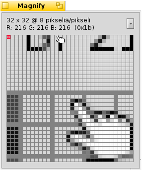

Suurennuslasi
Suurennuslasi
| Työpöytäpalkki: | ||
| Sijainti: | /boot/system/apps/Magnify | |
| Asetukset: | ~/config/settings/Magnify_prefs |
Suurennuslasi näyttää laajennetun version hiiren kohdistimen ympärillä olevasta alueesta.
Ylimpänä näet alueen suurennustason ja koon. "64 x 32 @ 8 pikseliä/pikseli" tarkoittaa, että katsot 64x32 pikselin neliötä hiiren osoittimen ympärillä ja jokainen pikseli on laajennettu 8-kertaiseksi.
Sen alapuolella on sen pikselin väri, joka on merkitty punaisella ääriviivalla. Sen väri esitetään RGB-arvona ja heksadesimaaliarvona.
Voit siirtää punaista ääriviivaa näppäimillä ← / → / ↑ / ↓.
Etäisyyksien mittaamiseksi ja objektien tasaamiseksi voit lisätä korkeintaan kaksi sinistä hiusristikkoa näppäimillä ALT H. Niiden X-/Y-koordinaatit vasempaan yläkulmaan ja jos molemmat on lisätty, niiden X-/Y-etäisyys toisistaan näytetään alhaalla.
Niitä voidaan myös siirtää näppäimillä ← / → / ↑ / ↓. Aktiivinen hiusristikko on merkitty merkillä ”x”.
Voit siirtää hiiren osoitinta pikseli pikseliltä näppäimillä ALT ← / → / ↑ / ↓.
Ponnahdusvalikon napsauttaminen tai hiiren kakkospainikkeen napsauttaminen pikselirasterissa tarjoaa sinulle lukuisia valitsimia:
| ALT S | Tallentaa nykyisen näytön PNG-tiedostona. | ||
| ALT C | Kopioi nykyisen näytön leikepöydälle. | ||
| ALT T | Näyttää lisätietoja. | ||
| ALT H | Lisää hiusristikon, jota voit raahata ympäriinsä. | ||
| ALT VAIHTO H | Poistaa viimeksi lisätyn hiusristikon. | ||
| ALT G | Näyttää päällysrasterin. | ||
| ALT F | Pysäyttää suurennusalueen päivittämisen. | ||
| ALT I | Jatkaa suurennusalueen päivittämistä, mutta ei enää seuraa hiiren osoitinta. | ||
| ALT / | Palaa takaisin neliönäyttöön ikkunan koon muuttamisen jälkeen. | ||
| ALT - | Supistaa suurennettua aluetta hiiren osoittimen ympärillä. | ||
| ALT + | Laajentaa suurennettua aluetta hiiren osoittimen ympärillä. | ||
| ALT , | Alentaa suurennusta. | ||
| ALT . | Kasvattaa suurennusta. |